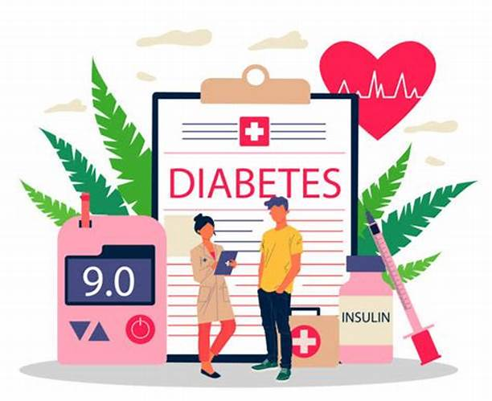
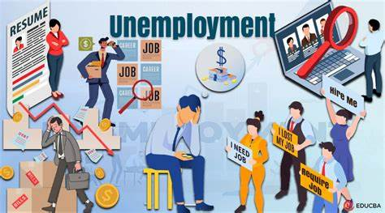

A recommendation system that provides personalized movie recommendations based on user preferences and similarities with other users,
and also aim to improve user satisfaction, increase user engagement,ultimately drive user's retention on the platform.
and briefly statistics. This project is a highlight of what data analysis is and can be a
start to a data science journey.
The objective of this hackathon is to develop a predictive model that determines if a customer will submit a vehicle insurance claim in the next three months
This solution will help streamline financial planning at AutoInland and allow them to better serve their customers by understanding
which customers are likely to submit a claim.

The main objective of this project is to build a machine learning model that can predict the occurrence of diabetes
in patients based on their medical history and demographic information
This project is designed to help analysts and researchers better
understand the e-commerce landscape in Brazil and identify opportunities for growth and
optimization.
The first project I ever did on Machine Learning. One week research and did the project using Weka.
No visualizations or analaysis done only that data was split into train and test to give classification of metrics used

The Omdena Machakos Unemployment Hackathon Project focused on tackling high unemployment in Machakos County, Kenya,
through data-driven methods.
The project utilized machine learning and data analytics to identify key unemployment factors and provide actionable insights for policy-making and interventions.
The hackathon involved a collaborative effort from data scientists and domain experts to create sustainable solutions
for reducing unemployment and improving socio-economic conditions in the region.
This is a detailed data engineering project as well but involves Time Series.
The main aim is to come up also with a system that will show users to purchase based on the price now and those predicted in the coming years depending with the data duration/ Span given.
Its still in progress because also time series needs to be correspodn and highly accurate. In this case the ARIMA model is greatly used to achieve and will achieve this,
Flask as well that will be used to develop the system in this case a website

Developed a predictive model to accurately estimate the likelihood of readmission for diabetic patients.
Identified key factors associated with readmission to enable proactive intervention by healthcare providers.
Enhanced patient management by providing insights for appropriate care, thereby reducing readmission rates.
Utilized data analytics and machine learning techniques to improve the accuracy and reliability of the predictions

Developed Greenspeed, an innovative tool designed to promote sustainable transportation choices.
The tool estimates travel times and calculates emissions for various modes of transportation, helping users make environmentally friendly travel decisions.
Utilized data analytics and machine learning to provide accurate and real-time travel time and emissions data.
Integrated user-friendly interfaces to enhance accessibility and user engagement.